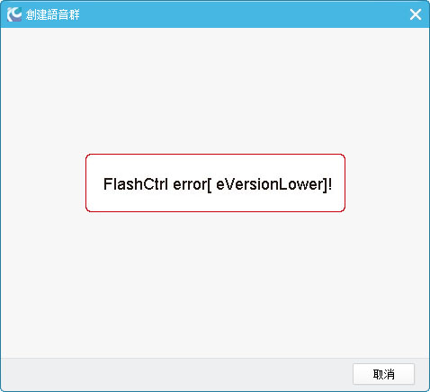

1. 如何增加个人的经验值？
个人的经验值是根据在线时长来计算的。登入RC后，每在线一个小时增加一个积分，每天增加的积分最高上限为24，不足一小时的部分会累积到下一次的计算。系统每天更新一次积分，时间为每日的上午8时。如遇突发情况导致在当日的8时积分未更新，未加的积分会累积到第二天的更新。
2.登入RC时弹出提示[伺服器连结失败,请检查您的网路连接!]，怎么办？
伺服器连结失败的主要原因如下：
1) 网路连接速度
2) 某些防火墙阻止了RC语音
解决方案：
1)测试检查您的网路连接速度，如果是因为网路问题，请自行对网路连接速度进行改善，或询问您的ISP业者。推荐一个测试网速的连结：http://www.speedtest.net
2) 如网路无问题，请检测电脑中是否安装了防火墙，如果安装了防火墙，请更改相应的阻挡设置或将防火墙关闭。根据大多数使用者的反应，主要问题是由于Nvidia主控台的防火墙Network Access Manager所引起的。若电脑中有Network Access Manager这个程式的话，请将它移除，重启电脑后问题即可解决， (打开控制台→新增/移除程式→NVIDIA ForceWare Network Access Manager→移除后重启电脑后开启RC语音即可。)
3.听不到别人讲话/别人听不到我讲话？
假如您听不到别人讲话，请按以下步骤检查问题：
1) 首先检查自己的耳麦是否插好；
2) 耳麦是否正常可以使用：
可以使用RC系统中的语音检测功能进行检测。请点视窗左上方的RC语音-->系统设定-->音频设定-->语音设备调节设定。
3) 检查选择的设备是否正确：
A) 如果您听不到声音，请检查输出装置：点击RC视窗左上角的RC语音--系统设定--音频设定，更改输出装置。
B) 如果别人听不到您的声音，则需要更改输入装置。

4.语音有杂讯怎么办？
1) 检查耳麦是否插好: 有些电脑的耳麦插头比较容易松动，请使用者自行调整。
2) 检查使用别的聊天软体是否也有杂讯: 有些音效卡和耳麦本身就会有很多杂讯，如果检查到别的软体也会有杂讯，就得请电脑工程师查看问题。
3) 网路不稳定: 建议在使用RC语音的时候不要下载东西和开PPS，因为这会很占网路。
5.如何使用RC游戏迷你窗？
系统预设的呼出RC游戏迷你窗功能的热键为SHIFT+TAB，如果要在游戏中使用RC游戏迷你窗，您需要在软体中启用此功能。打开软体视窗，点选视窗左上方的RC 语音—系统设定—RC游戏迷你窗设定，即可设定RC游戏迷你窗热键、透明度、自动呼出等功能。

6.好友数量及收藏的语音群数量上限说明
为了让您拥有一个更好更稳定的程式使用环境，同时也为了让伺服器更加稳定，软体更加轻量，我们对有些功能做了数量上的限制，在将来也会视情况做相关的调整。
目前的上限设置如下：
我能加入的语音群上限：20个
好友上限：500人
收藏的语音群上限：100个
7.更换图像失败怎么办？
1） 系统默认的图像最大值为4M，如果您上传的图像大小超过这个值，可能会导致上传不成功，建议您更换一张大小合适的图像。
2） 如果显示已上传成功，但个人资料中的图像无变化，建议您清空RC目录下的Imagecache资料夹后重启RC，或清理IE浏览器的暂存档。步骤：打开IE浏览器>工具>网际网路选项>一般>删除浏览历程纪录。
3） 如果上传不成功，或提示上传失败，可能是由于系统出错，请您及时联系我们回报问题。
8.RC中的图像显示空白怎么办？
如果图像显示空白，包括语音群图像、个人大头贴和好友大头贴，我们建议你清空RC安装目录下的imagecache资料夹后重启RC。或者重新安装程式，安装路径中不要存在中文。如原来路径：C:\Program Files\RC语音，可改为：C:\Program Files\RC。
9.程式顿的解决方法？
若您的电脑配置相对较低，在使用RC的过程中可能会有顿顿的感觉，CPU占用率也相对较高。为使整个程式运行更佳，我们建议您启用RC时在系统设定中关闭回音消除功能。
10.点击弹窗时出现Flash相关的错误提示怎么办？
若您创建/搜寻语音群或更换主题时，在弹窗中出现的是与Flash相关的错误提示，如FlashCtrl Error[VersionLower]，FlashCtrl Error[NotInstallFlash]等，说明您电脑中安装的flash版本过低，需要更新才能使用RC的相关功能。
解决方案：在IE浏览器中更新flash版本（仅限于IE浏览器）。
更新连结：http://get.adobe.com/tw/flashplayer/

11.福袋相关介绍
什么是淘福袋？
为了让更多的用户能使用福袋，在福袋发完，并过了一定的时间后，会进入淘福袋阶段。所有用户都可以淘到已发出去的号码，尝试使用。
淘到的福袋是不是一定能用？
进入淘福袋阶段的福袋都是他人曾抢储的，可能已无法使用，请多碰碰运气。
每淘一次福袋，将花费1颗银豆。
什么时候开始淘福袋？
在该福袋全部抢完后，将进入等待淘号阶段，在"即将开淘"处有开淘的时间提示。
淘到的福袋会不会保存在我的宝箱？
不会，我的宝箱只会存储抢储的福袋，淘到的福袋不会存储，所以请在淘到福袋的时候，立即对福袋尝试使用。
12.RC秀场官方认证视讯主播表演者行为管理规范
❖RC官方认证视讯主播不允许同一时间在多个平台同时开直播，如有违规，将被取消领取佣金资格；且撤销主播徽章，不做另行警告。
❖RC官方认证视讯主播错开时间在其他台湾网路平台开直播，如有违规，将被取消领取佣金，底薪和奖金资格；且撤销RC首页推荐位置。
1、直播时禁止抽烟，吸毒，喝酒。
2、直播时禁止言语攻击，禁止色情，政治，不雅，低俗言论，禁止在直播时候侮辱谩骂玩家或者其他主播以及工作人员。
3、直播时禁止以文字或语音形式宣传外站视讯软体或其他语音软体。
4、直播时需衣冠整洁，禁止裸身，或者过于裸露服饰（如比基尼，内衣等）出镜，禁止穿着政治机构制服出镜。
5、直播时禁止只播放电影，电视或其他相册录像，无本人出镜互动，官方游戏直播活动不受此规定限制。官方认证主播开直播不能只在打字，不出声音不能超过10分钟。
6、直播时禁止演唱或播放带色情，暴力，涉政的歌曲。
7、直播时不得做危险动作，不得使用危险道具（如枪支，刀具等）。
8、官方认证视讯主播不允许在游客无法进入的房间开直播,如有需要请使用非认证主播账号。
9、官方认证视讯主播不允许同一时间在多个平台同时开直播。如有违规，官方将采取警告，警告不改者将取消佣金领取资格并撤销认证徽章。
10、官方认证视讯主播不允许长时间播放影片或玩游戏（全屏和子母屏都不允许），如果有需求演示或电台素材穿插需要可以使用子母屏单次时长不得超过10分钟；如果个人有长时间玩游戏视讯互动的需求，请以子母屏的方式使用非认证帐号直播；拥有官方认证"游戏实况主播"仅限于在游戏群开实况，大型官方实况游戏活动除外！
以上规范适用于所有使用视讯直播的用户，包括RC官方认证实习主播，RC官方认证视讯主播，RC官方认证推荐主播，及RC官方认证好声音，如有发现违反规范行为，官方有权撤消认证徽章，情节严重者将封锁群视讯功能或永久封锁帐号；RC官方保留所有规定的解释权，以上规定将不定期更新。
13.RC秀场语音群视讯功能开通申请及撤销说明
开通Ａ方案：开通视讯必须群等级30级、群人气200人。
群人 气：开通视讯前七天，每天20：30─21：30高峰期之间的平均在线人数。
详阅：http://forum.showoo.cc/forum.php?mod=viewthread&tid=42559
开通Ｂ方案：凡满足以下任一项条件可以申请开通视讯群，请按照格式提交至【立即开通视讯功能】
条件一、视讯主播秀场等级达40级（个人月直播时间达到60小时以上）
条件二、用户富豪等级达以上
条件三、群组推荐新人成功认证视讯主播达到5位（一定要活跃的主播）
条件四、RC语音群等级达30级以上
※温心提醒：每个帐号仅限开通一个视讯群，仅限于群创建人申请。
【视讯功能开通后】会有考核周期，考核标准如下：
1、方案Ａ和方案Ｂ建立完善的管理体系，保证群健康发展；
2、方案Ａ和方案Ｂ遵守官方语音群管理规定以及RC视讯直播及主播管理规范；
3、方案Ｂ条件一、二、三的群视讯功能开通之后，每天20：30－21：30人气须维持在80以上
4、方案Ａ和方案Ｂ条件四的群视讯功能开通之后，每天人气均维持200以上人气
5、方案Ａ条件一的群视讯功能申请成功后前三个月，该群的认证主播月直播时长累计达到60小时；
6、方案Ａ和方案Ｂ视讯功能试用期一个月，一个月内未达标将回收。
【何为完善的管理体系】
1、稳定的管理人员架构，主播开播时至少保证1名管理者协助管理；
2、遇到突发情况能及时反馈和处理；
3、具有公信力，网友信任并乐于参与发言；
4、具备吸新能力，包括吸纳新主播和新会员；
5、定期组织活动或者会议，提高群活跃度和管理水平；
6、对外推广，增加群曝光度；
7、群管理熟悉软体操作，能帮助新人快速成长；
官方人员将会定期对开通视讯应用的语音群做达标检查，考核未达到标准的视讯群，官方并将撤销视讯功能权益。
回收之后需要一个月之后才可以重新申请；在此慎重说明本公告适用于方案Ａ和方案Ｂ之视讯开通的相关规定条款。